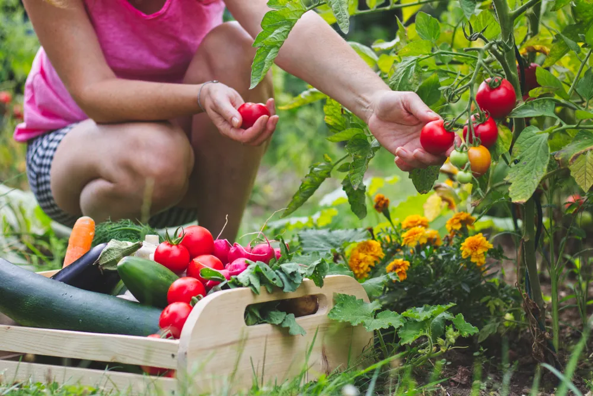

Healthy Reasons Why You Should Grow Vegetables

Nothing beats the warm, buttery taste of a fresh tomato plucked right off the vine or the refreshing crispness of lettuce picked straight from the soil. Vegetable gardens are not only rewarding in flavor, but also in the nutritional and health benefits associated with them.
Besides the access to fresh produce all season long, and the money savings involved with growing your own food—continued research indicates that vegetable gardening is good for you and your whole family. Here are seven good reasons to start your own vegetable garden today…
Gardening Burns Calories
Let’s face it; it’s really tough to get enough exercise every week. Gardening is good for the body, as well as the table. The Center for Disease Control and Prevention calculates that an average person burns 330-calories per hour doing light gardening or yard work. That’s the same amount of calories you’d burn dancing and more than what you’d torch with a leisurely bike ride.
According to a recent study of 100 gardeners in the U.K., conducted by NetVoucherCodes.co.uk, just 3-hours of gardening is equivalent to a 1-hour intense gym workout. The study indicates that the typical gardener burned up to 19000-calories during a 6-month season.
Garden Veggies are More Nutritious
Many grocery stores and especially farmers’ markets specialize in freshly picked produce. However, once purchased food often sits in the fridge for days or even up to a week. One of the advantages of growing a vegetable garden is being able to harvest immediately before use. Researchers at Penn State University studied the effects of storage on the nutrient content of spinach. Findings determined that the veggie only retained 53-percent of it’s folate after 8-days, when stored at 39-degrees Fahrenheit.
A UC Davis study also revealed that spinach can lose up to 64-percent of its ascorbic acid (vitamin C) after one day in the fridge. Green beans lose up to 23-percent after a day, green peas can lose 61-percent after two days, and carrots 42-percent after a week. It just goes to show that leaving vegetables in the ground or on the vine until you are ready to eat them can preserve their nutritious content.
Gardening Boosts Mood
Maybe it’s the serene environment of the garden, or perhaps it’s the relaxing nature of toiling away in the soil. Either way, the immediate after effects of spending time tending to plants are pretty obvious to anyone who enjoys the experience. And studies support the fact that gardening may have chemical effects on mood, similar to Serotonin-boosting antidepressants.
A professor from the University of Colorado, at Boulder, studied the effects of injecting mice with Mycobacterium vaccae, a common and harmless bacterium found in good garden soil. Study findings showed that the injections increased metabolism and the release of Serotonin to the cognitive and mood centers of the brain.
Gardening Lowers Blood Pressure
Modern lives are filled with stressful commutes, jobs, tasks, etc. A place of peace and solitude, like a garden, becomes a refuge of relaxation as well as a heart health strengthener, says a study published in the British Medical Journal.
Along with a proper diet, exercise from gardening can help prevent the risk of heart disease and other illnesses linked to hypertension. The US National Institute of Health and the American Heart Association both recommend gardening as part of a solid strategy for lowering blood pressure , and preventing strokes and heart attacks.
Greater Access to Nutritious Varieties
Over the past 60 or more years, vegetable breeding has been geared towards bigger, prettier and faster growing produce. The nutritious content has unfortunately been compromised along the way. The University of Texas, at Austin, compared USDA data from 1950 and 1999, their findings showed that among the 43 different varieties of fruits and vegetables studied, there was a “reliable decline” in protein, calcium, phosphorus, iron, riboflavin, and vitamin C.
The study also showed that heirloom and older varieties of seeds and plants available to the home gardener provided a distinct nutritional advantage to many of the varieties available at the local grocery store. In the end, garden-variety produce is not only better for you, but in most cases, much tastier as well.
Gardening May Prevent Dementia
Dementia can be one of the scariest illnesses facing our aging population. Besides the loss of motor skills, balance, and memory, dementia can also rob the inflicted of communication skills and judgment.
Lifestyle Factors and Risk of Dementia: Dubbo Study of the Elderly, a report published in the Medical Journal of Australia, indicates that participants who engaged in daily gardening reduced their risk of dementia by 36-percent. The study also specifically recommended daily gardening as a strategy for reducing the risk of dementia with age.
Kids Will Eat What They Grow
Ron Finley, a community garden activist in South Central Los Angeles, was quoted as saying “…if you want a kid to eat kale, get him to grow kale,” in one of his TED Talks. This is a widely held belief in community gardening circles. Finley encourages inner city youth involvement in garden projects because of the community, health, and nutrition benefits, and research strongly backs his opinions.
According to the paper Hortaliza: A Youth “Nutrition Garden” in Southwest Detroit, published in the Children, Youth, and Environments Journal, “At the end of the season, we documented increased interest among kids in eating fruits and vegetables…”
Source: https://activebeat.com/diet-nutrition/7-healthy-reasons-why-you-should-grow-vegetables/